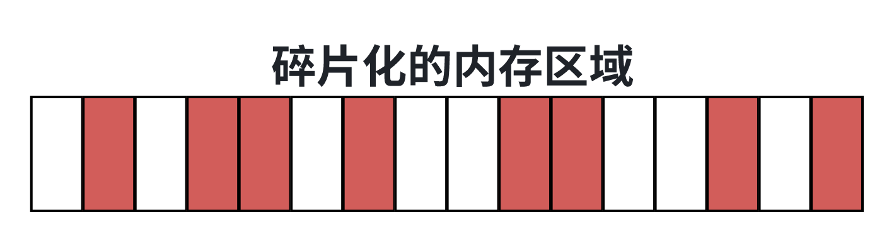
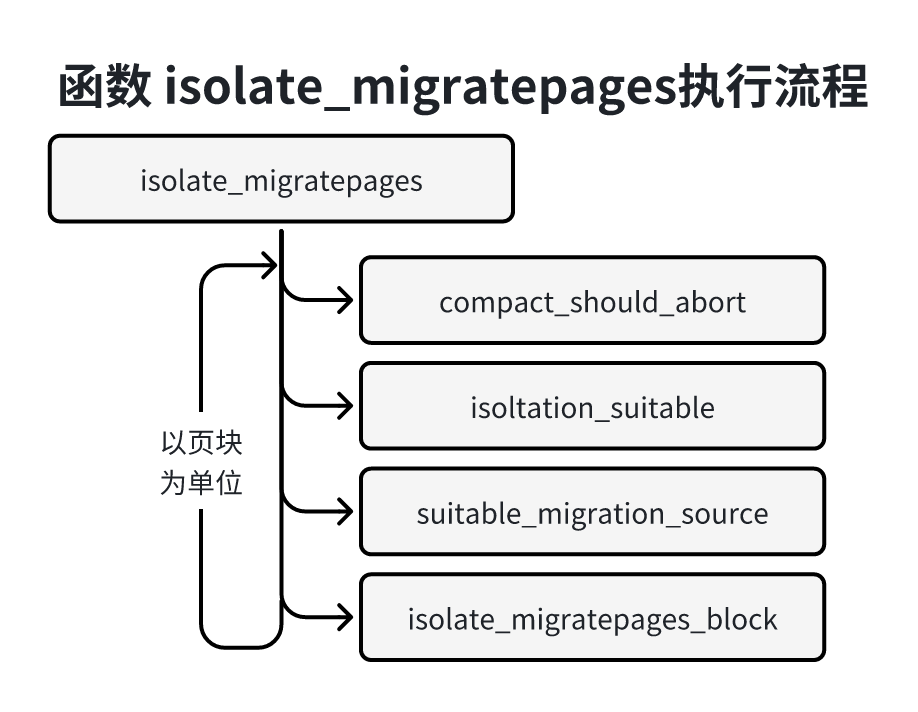

内存碎片化分为内部碎片和外部碎片，内部碎片指内存页里面的碎片，外部碎片指空闲的内存页分散，很难找到一组物理地址连续的空闲内存页，无法满足超过一页的内存分配请求。
对于内核来说外部碎片是一个问题，内核有时候需要分配超过一页的物理内存，因为内核使用的线性映射区域的虚拟地址，所以必须分配连续的物理页。
为了解决外部碎片问题，内核引入一下反碎片技术。
1）2.6.23版本引入了虚拟可移动区域。
2）2.6.12版本引入了成块回收（lumy reclaim）3.5版本废除，被内存碎片整理技术取代。
成块回收不是一个完整的解决方案，它只是缓解 了碎片的问题。成块回收，就是尝试成块回收目标页相邻的页面。以想成一块满足需求的高阶连续页块。这种方法有局限性，就是成块回收时没有考虑呗连带回收的页面可能是热页，即被高轻度使用的页，中对系统性能是由损伤的。
3）2.6.24版本引入了根据可移动性分组的技术，把物理页分为不可移动页、可移动页和可胡思后ye种雷丁个。
4）2.6.35版本引入了内存碎片整理技术。
虚拟可移动区域和根据可移动性分组时预防外部碎片的技术，。成块回收和内存碎片整理时在出现外部碎片以后消除碎片的技术。
可移动区域（ZONE_MOVABLE）是一个伪内存区域，基本思想很简单：把物理内存分为两个区域：一个区域用于分配不可移动的也，另一个区域用于分配可移动的也，防止不可移动页向可移动页区域引入碎片。
可移动区域必须有管理员配置，配置方法如下：
使用内核引导参数“kernelcore = nn[KMGTPE]”（K表示单位KB，M表示单位MB）指定不可移动区域的大小，也可以适应“kernelcore=mirror”指定使用镜像的内存作为不可移动页区域，使用其他内存作为可移动区域。
内存镜像是内存冗余技术的一种，是为了提供服务器的可靠性，防止内存故障导致服务的数据永久丢失或系统宕机，内存镜像的工作原理与硬盘的热备份类似，内存镜像是将内存数据做两个拷贝，分配房子啊内存和镜像内存中。系统工作时会向两个内存中同时写入数据，因此得的内存数据有两套完整的额备份。
使用内核引导参数“movablecore = mm[KMG]”指定可移动区域的大小。
如果同时指定参数kernelcore和movablecore，那么不可移动区域的大小去参数kernelcore和（物理内存 - 参数movablecore）的最大值。
默认巨型页时不可移动的，不会从可移动区域分配巨型页，可以通过文件“/proc/sys/vm/hugeppages_treat_as_movable”配置允许从可移动区域分配巨型页。
在NUMA系统中，如果打开了配置宏CONFIG_MOVABLE_NONE（允许一个内存节点只有可移动的内存），并且指定内核引导参数“movable_node”，那么忽略内核引导参数“kernelclone” 和 “movablecore”，所有可以插拔的物理内存都作为可移动区域。
可移动 区域（ZONE_MOVABLE）没有包含任何物理内存，所以我们说它是伪内存区域，或者说是虚拟的内存区域，可移动区域借用最高内存区域的内存，在32位系统上最高的内存区域通常是高端内存区域（ZONHe_HIGHMEM），在64位系统上最高的内存区域通常时普通区域（ZONE_NORMAL）。
函数cmdline_parse_kernelcore解析内核引导参数“kernelcore”代码如下：
171// 位置 ：mm/page_alloc.c2
3static int __init cmdline_parese_kernelcore(char *p)4{5 // 解析kernelcore=mirror 把全局变量mirrored_kernelcore设置为true6 // 表示把进行内存作为不可移动区域7 if(parse_option_str(p, "mirror")){8 mirrored_kernelcore = true;9 return 0;10 }11 12 // 如果值是不可移动区域的大小，那么使用全局变量requeired_kernelcore13 // 保存不可移动区域的大小14 return cmdline_parse_core(p, &required_kernelcore);15}16
17early_param("kernelcore", cmdline_parse_kernelcore);函数cmdline_parse_movablecore解析内核引导参数“movablecore”使用全局变量required_movablecore保存可移动区域的大小，代码如下：
81// 位置：mm/page_alloc.c2
3static int __init cmdline_parse_movablecore(char *p)4{5 return cmdline_parase_core(p, &required_movablecore);6}7
8earylyy_param("movablecore", cmdline_parse_movablecore);函数cmdline_parse_movable_node解析内核引导参数“movable_node”，把全局变量movable_node_enabled设置为true，表示所有可以热插拔的物理内存都作为可移动区域，代码如下：
131// 位置：mm/memory_hotplud.c2
3static int __init cmdlint_parse_movable_node(char *p)4{5 6 movable_node_enabled = true;7 8 pr_warn("movable_node option not supported]n");9 10 return 011}12
13early_param("movable_node", cmdline_parse_movable_node);函数find_zone_movable_pfns_for_nodes确定可移动区域的范围。
1）确定可移动区域从哪个内存区域借用物理页：调用函数find_usable_zone_for_movable以查找包含物理页的最高内存区域，全局变量movable_zone保存借用的区域的索引。
2）确定每个内存节点中可移动区域的其实物理页号，使用全局数组zone_movable_pfm[MAX_NUMNMODES]保存，分3种情况：
1、使用可以热插拔的物理内存作为可移动区域。
2、使用镜像内存作为不可移动区域，使用其他内存作为可移动区域。
3、如果管理员配置了不可移动区域或可移动区域的大小，处理如下：如果同时指定参数kernelcore和movablecore，那么不可移动区域的大小取参数kernelcore和（物理内存容量- 参数movablecore）的最大值；把不可移动页区域的内存按比例分布到所有内存节点上。
函数caculate_node_totalpages负责计算一个内存节点中所有内存区域的其实物理页号和物理页总数，针对每个内存区域，调用函数zone_spanned_pages_in_code来计算内存区域的其实物理页号和结束物理页号。
1）从全局数组arch_zone_lowest_possible_pfn和arch_zone_highest_possible_pfb中分别得到内存区域的其实物理页号和结束物理页号。
2）调用函数adjuest_zone_range_for_movable，根据数组zone_movable_pfn修正借用区域的结束物理页号，以及得到可移动区域的其实物理页号。
3）从可移动区域分配物理号。
申请物理页的时候，如果同时指定了分配标志__GFP_HIGHMEM和__GFP_MOVABLE，页分配器的核心函数__alloc_pages_nodemask(->prepare_alloc_pages->gfp_zone)计算处首选的内存区域是可移动区域，首先尝试从可移动区域分配物理页。如果可移动区域分配失败，从备用的内存区域借用物理页。
分配标志__GFP_MOVABLE有两个用处：
1）和__GRP_HIFHMEM组合表示从可移动区域分配物理页。
2）子啊根据可移动分组技术中表示申请歉意类型是可移动类型的额物理页。
为用户空间分配物理页时，通常使用分配标志组合GFP_HIGHUSER_MOVABLE，这个组合包含标志__GFP_HIGHMEM和__GFP_MOVABLE。
51// 位置：include/linux/hfp.h2
3例如，进程访问匿名页的时候，如果没有映射到物理页，生成页错误异常，页错误异常处理程序在函数do_anonymous_page中调用函数alloc_zeroed_user_highpage_movable以分配物理页，函数alloc_zeroed_user_movable使用分配标志组合GFP_HIGHUSER_MOVABLE分配物理页。
内存碎片整理（memory compaction 内存紧缩 内存碎片整理）基本思想是：从内存区域的地步扫描已、分配的可移动页，从内存区域的顶部扫描空闲页，把底部的可移动页移动到顶部的空闲页，在底部形成连续的空闲页。
编译内核时，如果需要内存碎片整理功能，必须开启配置文件“mm/Kconfig”定义的配置宏CONFIG_COMPACTION，默认开启。
内存碎片整理技术提供了以下配置文件。
1）文件“/proc/sys/vm/compact_memory”：向这个文件写入任何整数值（数值没有意义），触发内存碎片整理。
2）文件“/proc/sys/vm/compact_unevictbale_allowed”：用来设置是否允许内存碎片整理移动不可回收的页（进程使用系统调用mlock把页锁定在内存中），如果设置为1，表示允许，默认值是1。
3）文件“/proc/sys/vm/extfrag_threshold”：用来设置外部碎片的阈值，取值范围是0~1000，默认值是500。这个参数影响内核在申请连续页失败的时候选择直接回收页还是选择内存碎片整理。内核计算处内存区域的碎片指数，碎片指数趋于0表示分配失败及时因为内存不足，碎片指数趋于1000表示分配失败时因为内存碎片。如果碎片指数小于或等于外部碎片的阈值，选择直接回收页；如果碎片指数大于阈值，那么选择内存碎片整理。
我们假设有一个很小的内存区域，包含16个页，如下图所示：

白色表示是空闲的，这个内存区域已经碎片化，最大的连续空闲页时两页，从这个区域分配四页将会失败，甚至分配两页也会失败，因为连续的两个空闲页的其实地址没有对齐的两页的整数倍。
首先，内存碎片的整理算法是从内存区域的地步项顶部扫描，把可以移动的已分配页组成一条链表，我们把这个扫描称为迁移扫描器，如下图所示：
然后，内存碎片整理算法从内存区域的顶部项底部扫描，把空闲的也组成一条链表，我们把这个扫描称为空闲扫描器，如下图所示：
最后，迁移扫描器和空闲扫描器在内存区域的中间相遇，把可以移动的已分配的也移动到顶部的空闲页，形成连续的8个空闲页，可以满足申请连续8页的需求：
在真实的系统中，内存区域大的多，内存碎片整理以内存区域为单位执行，在内存区域内存以分组页块（）为单位执行。
内存碎片整理的算法如下：
1）首先从内存区域的地步项顶部以页块为单位扫描，在页块内存从其实也向结束页扫描，把这个页块里面的可移动页组成一条链表。
2）然后从内存区域的顶部向底部以页块为单位扫描，在页块内存也是从起始页向结束页扫描，把空闲页组成一条链表。
3）最后把底部的可移动页的数据复制到顶部的空闲页，修改进程的页表，把虚拟页映射到物理页。
内存碎片整理有3种优先级，从高到低一次如下所示：
1）COMPACT_PRIO_SYNC_FULL：完全同步模式，允许阻塞，允许把脏的文件页回写到存储设备上，并且等待回写完成。
2）COMPACT_PRIO_SYNC_LIGHT：轻量级同步模式，允许大多数操作阻塞，但是不允许把脏的文件页回写到存储设备上，（因为修妖等待很长的时间）。
3）COMPACt_PRIO_ASYNC：异步模式，不允许阻塞。
完全同步模式的成本最高，轻量级同步模式的成本次之，异步模式的成本最低。
执行内存碎片整理的时机：
1）页分配器使用最低水线分配页失败以后，如果调用者语序直接回收页（即设置了分配标志__GFFP_DIRECT_RECLAIM）和写存储设备（即设置了分配标志__GFP_IO），并且是昂贵的分配（申请的阶数大于3）或者申请不可以动类型的连续页，那么在尝试直接回收页之前，先尝试执行异步模式的内存碎片整理。
2）页分配器直接回收页以后分配连续页仍然失败，如果调用者允许写存储设备，尝试执行轻量级同步模式的内存碎片整理。
3）每个内存节点有意义页回收线程和一个内存碎片整理线程，当页回收线程准备书面一小段时间的时候，唤醒内存碎片整理线程，内促碎片整理线程执行轻量级同步模式的内存碎片整理。
内存碎片整理线程的名称是“kcompacted<node_id>”，内存节点的pglist_data实例的成员“kcompactd”指向内存素片整理线程的进程描述符。
4）当管理员向文件“/proc/sys/vm/compact_memory”写入任何整数值的时候，在所有内存节点的所有内存区域上执行完全同步的内存碎片整理。
判断一个内存区域是否适合执行内存碎片整理的标准如下：
1）如果管理员通过文件“/proc/sys/vm/compact_memory”触发内存碎片整理，那么这个内存区域强制执行内存碎片整理。
2）如果内存区域同时满足以下3个条件，适合执行内存碎片整理。
a、如果（空闲页数 - 申请页数）低于水线或者大于等于说先但是没有没有足够大的空闲页，那么这个内存区域适合执行内存碎片整理。
b、如果（空闲页数 - 申请页数）大于或等于水线，说明有足够多的空闲页作为迁移的目的地，那么这个内存狳适合执行内存碎片整理。
c、对于昂贵的分配（阶数大于3），计算碎片指数（framemntation index）。如果碎片指数在范围[0 , 外部碎片的阈值]以内，说明分配失败时内存不足导致的，不是外部碎片导致的，咋那么这个内存区域不适合执行内存碎片整理。
-> 如果不存在空闲的页块，那么碎片指数=0。
-> 如果至少存在已给足够大的空闲页块，那么碎片指数 = -1000。
-> 其他情况，碎片只是 = 1000 - （1000 + 1000 * 空闲页 / 申请页数）/ 空闲页的总数。
碎片指数趋于0表示分配失败是因为内存不足，区域1000表示分配失败时因为外部碎片。外部碎片的阈值是内存不足和外部碎片分界线：如果碎片指数小于或等于阈值，分配失败时因为内存不足，应该直接回收页；如果碎片指数大于阈值，分配失败时因为外部碎片，应该执行内存碎片整理。
内促碎片整理的结束条件如下：
1）如果迁移扫描器和空闲扫描器相遇，那么内存碎片整理结束。
2）如果迁移扫描器和空闲扫描器没有相遇，但是申请或备用迁移类型至少有一个足够大的空闲页块，那么内存碎片整理结束。
如果管理员通过文件“/proc/sys/vm/compact_memory”触发内存碎片整理，结束的唯一条件是迁移扫描器和空闲扫描器相遇。
内存碎片整理成功的标准是：（空闲页数 - 申请页数）大于或等于水片，并且申请或备用的迁移至少有一个足够大的空闲页块。
执行完全同步模块或轻量级同步摩卡医德内存碎片整理，当迁移扫描器和空闲扫描器相遇的时候，没有达到成功标准，以后试图执行轻量级同步或异步模式的内存碎片整理，如果申请阶数大于或等于内存碎片整理失败时的申请阶数，需要日出若干次。
内核在内存区域中增加了3个成员来记录内存碎片整理推迟的信息：
111// 位置：include/linux/mmzone.h2
3struct zone{4 ...5 6 unsigned int compact_considered;7 unsigned int compact_defer_shift;8 int compact_order_dailed;9 10 ...11}1）成员compact_considered记录延迟的次数。
2）成员compact_defer_shift是退出的最大次数以2为底的对数，当退出的次数达到（1<< compact_defer_shift）时不能推迟。
每次内存碎片整理执行失败，把成员compact_defer加1，不允许超过COMPACT_MAX_DEFER_SHIFT（默认6）即把推迟的最大次数翻倍，但是不能超过64。
页分配器在执行内存碎片整理以后，如果分配页成功，那么把成员compact_defer_shift设置为0。
3）成员compact_order_failed记录内存碎片整理失败时的申请阶数。
内存碎片整理执行成功的情况，如果申请阶数order大于或等于成员compact_order_failed，那么把成员compact_order_failed设置为（order + 1）。
内存碎片整理一致性失败的时候，如果申请阶数order小于compact_order_failed，那么把成员compact_order_failed设置为order。
函数__alloc_pages_nodemask是页分配器的核心函数，__alloc_page_slowpath是页分类器的慢速路径，执行流程如下图所示：
841// 位置：mm/page_alloc.c2
3static inline struct page *4__alloc_pages_slowpath(gfp_t gfp_mask, unsigned int order,5 struct alloc_context *ac)6{7 ...8 compaction_retries = 0;9 no_progress_loops = 0;10 compact_priority = DEF_COMPACT_PRIORITY;11 ...12 if (gfp_mask & __GFP_KSWAPD_RECLAIM)13 wake_all_kswapds(order, ac);14
15 /*16 * 使用最低水线分配页17 */18 page = get_page_from_freelist(gfp_mask, order, alloc_flags, ac);19 if (page)20 goto got_pg;21
22 /*23 * 执行异步模式的内存碎片整理24 * 使用最低水线分配页失败后，满足以下3个条件就执行异步模式的内存碎片整理25 *26 * 1）调用者允许直接回收页27 * 2）这是昂贵的分配（分配的阶数大于3）或者申请不可移动的连续页28 * 3）不允许使用紧急保留内存29 */30 if (can_direct_reclaim &&31 (costly_order ||32 (order > 0 && ac->migratetype != MIGRATE_MOVABLE))33 && !gfp_pfmemalloc_allowed(gfp_mask)) {34 page = __alloc_pages_direct_compact(gfp_mask, order,35 alloc_flags, ac,36 INIT_COMPACT_PRIORITY,37 &compact_result);38 if (page)39 goto got_pg;40
41 /**42 * 执行异步模式的内存碎片整理后，分配页仍然失败，如果是昂贵的分配，并且 调用者不允许重试43 * 44 * 1）如果内存碎片整理被推迟，那么处理结束45 * 2）把一次内存碎片整理的优先级从轻量级同步模式降级为异步模式46 */47 if (costly_order && (gfp_mask & __GFP_NORETRY)) {48 if (compact_result == COMPACT_DEFERRED)49 goto nopage;50 compact_priority = INIT_COMPACT_PRIORITY;51 }52 }53
54retry:55 ...56 // 直接回收页以后分配页仍然失败，执行第二次内存碎片整理57 page = get_page_from_freelist(gfp_mask, order, alloc_flags, ac);58 if (page)59 goto got_pg;60
61 ... 62
63 /* 执行内存碎片整理 */64 page = __alloc_pages_direct_reclaim(gfp_mask, order, alloc_flags, ac,65 &did_some_progress);66 if (page)67 goto got_pg;68 ...69
70 /* 调用者不允许重试 */71 if (gfp_mask & __GFP_NORETRY)72 goto nopage;73
74 ...75 // 如果调用者允许重试，并且直接回收了一些页，那么调用函数should_compact_retry判断是否76 // 重新尝试内存碎片整理77 if (did_some_progress > 0 &&78 should_compact_retry(ac, order, alloc_flags,79 compact_result, &compact_priority,80 &compaction_retries))81 goto retry;82
83 ...84}函数__alloc_pages_direct_compact：内存碎片整理的执行流程如下图所示：
571// 位置 mm/compaction.c2
3enum compact_result try_to_compact_pages(gfp_t gfp_mask, unsigned int order,4 unsigned int alloc_flags, const struct alloc_context *ac,5 enum compact_priority prio)6{7 int may_perform_io = gfp_mask & __GFP_IO;8 struct zoneref *z;9 struct zone *zone;10 enum compact_result rc = COMPACT_SKIPPED;11
12 // 如果调用者不允许写存储设备，那么不执行内存碎片整理13 if (!may_perform_io)14 return COMPACT_SKIPPED;15
16 trace_mm_compaction_try_to_compact_pages(order, gfp_mask, prio);17
18 /* 针对列表中的每个区域执行内存碎片整理 */19 for_each_zone_zonelist_nodemask(zone, z, ac->zonelist, ac->high_zoneidx,20 ac->nodemask) {21 enum compact_result status;22
23 // 如果内存碎片整理的优先级不是完全同步，并且应该推迟，那么该内存区域不执行内存碎片整理24 if (prio > MIN_COMPACT_PRIORITY25 && compaction_deferred(zone, order)) {26 rc = max_t(enum compact_result, COMPACT_DEFERRED, rc);27 continue;28 }29
30 // 在该内存区域执行内存碎片整理31 status = compact_zone_order(zone, order, gfp_mask, prio,32 alloc_flags, ac_classzone_idx(ac));33 rc = max(status, rc);34
35 // 如果分配整理执行成功，（空闲页数 - 申请页数） 大于 等于水线 有足够大的空闲页块，36 // 更新推迟信息，并且不在继续执行内存碎片整理37 if (status == COMPACT_SUCCESS) {38 compaction_defer_reset(zone, order, false);39 break;40 }41
42 // 如果内存碎片整理的优先级不是异步模式，并且迁移扫描器和空闲扫描器在内存区域中间相遇43 // 那么更新推迟信息44 if (prio != COMPACT_PRIO_ASYNC && (status == COMPACT_COMPLETE ||45 status == COMPACT_PARTIAL_SKIPPED))46 47 defer_compaction(zone, order);48
49 // 如果内存碎片整理的优先级是一部模式并且进程的调度需要重新调度进程，或者当前进程收到致命信号50 // 那么停止内存碎片化整理51 if ((prio == COMPACT_PRIO_ASYNC && need_resched())52 || fatal_signal_pending(current))53 break;54 }55
56 return rc;57}
函数compact_zone负责在一个内存区域执行内存碎片整理，主要步骤如下：
1）调用函数compaction_suitable，判断内存区域是否适合执行内存碎片整理。
2）设置迁移扫描器和空闲扫描器的其实物理页号。
-> 如果扫描整个内存区域，那么迁移扫描器的其实物理页号是内存区域的第一页，空闲扫描器的其实物理页号是最后一个页块的第一页。
-> 如果不需要扫描整个内存区域，那么迁移扫描器的其实物理页号zone->compact_cached_migrate_pfn[sync]（sync1表示同步模式，sync为0表示异步模式）空闲扫描器的其实物理页号是zone->compact_cache_free_pfn。
3）调用函数compact_finished，判断内存碎片整理是否完成，如果应该继续，那么执行下一步。
4）调用函数isolate_migratepage，隔离可移动页，把可移动页添加大迁移扫描器的可移动页的链表中。
5）调用函数migrate_page，把可移动页移动到内存区域顶部的空闲页。
6）回到第3步。
函数compaction_suitable。
函数compaction_suitable负责判断内存区域是否适合执行内存碎片整理，代码如下：
601// 位置：mm/compaction.c2
3enum compact_result compaction_suitable(struct zone *zone, int order,4 unsigned int alloc_flags,5 int classzone_idx)6{7 enum compact_result ret;8 int fragindex;9
10 // 调用函数__compaction_suitable判断内存狳是否适合执行内存碎片整理11 ret = __compaction_suitable(zone, order, alloc_flags, classzone_idx,12 zone_page_state(zone, NR_FREE_PAGES));13
14 // 对于昂贵的分配，计算碎片指数，如果碎片指数在范围[0, 外部碎片阈值]以内，15 // 说明分配失败是内存不足导致的，不是外部碎片导致的，那么内存区域不适合执行内存碎片整理16 if (ret == COMPACT_CONTINUE && (order > PAGE_ALLOC_COSTLY_ORDER)) {17 fragindex = fragmentation_index(zone, order);18 if (fragindex >= 0 && fragindex <= sysctl_extfrag_threshold)19 ret = COMPACT_NOT_SUITABLE_ZONE;20 }21
22 trace_mm_compaction_suitable(zone, order, ret);23 if (ret == COMPACT_NOT_SUITABLE_ZONE)24 ret = COMPACT_SKIPPED;25
26 return ret;27}28
29
30static enum compact_result __compaction_suitable(struct zone *zone, int order,31 unsigned int alloc_flags,32 int classzone_idx,33 unsigned long wmark_target)34{35 unsigned long watermark;36
37 // order=-1，表示内存碎片整理是由管理员通过文件“/proc/sys/vm/compact_memory”触发的38 // 那么内存区域强制执行内存碎片整理39 if (is_via_compact_memory(order))40 return COMPACT_CONTINUE;41
42 // 如果（空闲页数 - 申请页数）大于或等于水线，并且至少有一个足够大的空闲页块，43 // 那么内存区域不需要执行内存碎片整理44 watermark = zone->watermark[alloc_flags & ALLOC_WMARK_MASK];45
46 if (zone_watermark_ok(zone, order, watermark, classzone_idx,47 alloc_flags))48 return COMPACT_SUCCESS;49
50 // 内存碎片整理需要申请空闲页，如果 空闲页 - 两倍申请的页数 大于等于水线说明空闲页太少，那么内存狳不适合执行内存碎片整理51 // （如果是昂贵的分配，使用低水线，否则使用最低水线）52 watermark = (order > PAGE_ALLOC_COSTLY_ORDER) ?53 low_wmark_pages(zone) : min_wmark_pages(zone);54 watermark += compact_gap(order);55 if (!__zone_watermark_ok(zone, 0, watermark, classzone_idx,56 ALLOC_CMA, wmark_target))57 return COMPACT_SKIPPED;58
59 return COMPACT_CONTINUE;60}函数isolate_migratepages：负责隔离可移动页，迁移扫描器从其实物理页号以页块为单位扫描，找到第一个何时die页块，把可移动页添加到迁移扫描器的可移动页链表中，执行流程如下图所示：

代码：
731// 位置：mm/compaction.c2
3static isolate_migrate_t isolate_migratepages(struct zone *zone,4 struct compact_control *cc)5{6 unsigned long block_start_pfn;7 unsigned long block_end_pfn;8 unsigned long low_pfn;9 struct page *page;10 const isolate_mode_t isolate_mode =11 (sysctl_compact_unevictable_allowed ? ISOLATE_UNEVICTABLE : 0) |12 (cc->mode != MIGRATE_SYNC ? ISOLATE_ASYNC_MIGRATE : 0);13
14 // low_pfn是迁移扫描器上次停止的物理页号从这个物理页号继续扫描15 low_pfn = cc->migrate_pfn;16 17 // block_start_pfn是物理页号low_pfn所属页块的第一个页，block_end_pfn是下一个页块的第一页18 block_start_pfn = pageblock_start_pfn(low_pfn);19 if (block_start_pfn < zone->zone_start_pfn)20 block_start_pfn = zone->zone_start_pfn;21
22 block_end_pfn = pageblock_end_pfn(low_pfn);23
24 // 迁移扫描器向顶部以页块为单位扫描，直到和空闲扫描器相遇为止，针对每个开业都会进行处理25 for (; block_end_pfn <= cc->free_pfn;26 low_pfn = block_end_pfn,27 block_start_pfn = block_end_pfn,28 block_end_pfn += pageblock_nr_pages) {29
30 /**31 * 内存区域可能非常大，每次扫描完32个页块，检查进程调度器是否需要重新调度进程，或者是否应该放弃执行异步模式的内存碎片管理32 * 33 * 如果进程调度需要重新调度进程，那么对于一部模式的内存碎片整理，选择放弃；对于轻量级同步模式或完全同步模式的内存碎片整理的内存碎片整理，选择调度进程，但是不停止扫描34 * 如果进程调度器不需要重新调度进程，那么应该继续扫描35 */36 if (!(low_pfn % (SWAP_CLUSTER_MAX * pageblock_nr_pages))37 && compact_should_abort(cc))38 break;39
40 page = pageblock_pfn_to_page(block_start_pfn, block_end_pfn,41 zone);42 // 检查页块的第一页和最后一页是不是都属于当前内存区域。43 if (!page)44 continue;45
46 // 如果页块因为上次隔离失败被标记为跳过，并且调用者没有强制要求扫描标记为跳过的页块47 // (完全同步优先级需要扫描标记为跳过的页块)那么跳过这个页块。48 if (!isolation_suitable(cc, page))49 continue;50
51 // 判断页块的迁移类型是否适合52 // 如果内存碎片的优先级不是异步模式，或者不是由页分配器执行内存碎片整理（是内存碎片整理线程或者管理员通过文件触发）那么任何类型的页块都可以53 // 内存碎片整理的优先级是异步模式，并且是由页分配器执行内存碎片管理：如果申请可移动类型的页，页块的类型必须是CMA类型（CMA是连续内存分配器，只允许可移动类型盗用CMA类型的页）54 // 或可移动类型；如果申请其他类型的页，页块的类型必须和申请的类型相同55 if (!suitable_migration_source(cc, page))56 continue;57
58 // 找到第一个何时的页块调用isolate_migratepages_block来隔离页块里面的可移动页59 low_pfn = isolate_migratepages_block(cc, low_pfn,60 block_end_pfn, isolate_mode);61
62 if (!low_pfn || cc->contended)63 return ISOLATE_ABORT;64
65 break;66 }67
68 69 // 记录迁移扫描器停止的物理页号，下次从这个物理页号继续扫描70 cc->migrate_pfn = low_pfn;71
72 return cc->nr_migratepages ? ISOLATE_SUCCESS : ISOLATE_NONE;73}函数isolate_migratepages_block负责Felicia一个页块里面的可移动页，代码：
1281// 位置：mm/compaction.c2
3static unsigned long4isolate_migratepages_block(struct compact_control *cc, unsigned long low_pfn,5 unsigned long end_pfn, isolate_mode_t isolate_mode)6{7 ...8
9 // 对每个物理页进行处理10 for (; low_pfn < end_pfn; low_pfn++) {11
12 // 如果页属于页分配器，说明页时空闲的，那么跳过这个页13 if (skip_on_failure && low_pfn >= next_skip_pfn) {14
15 if (nr_isolated)16 break;17
18 next_skip_pfn = block_end_pfn(low_pfn, cc->order);19 }20
21 if (!(low_pfn % SWAP_CLUSTER_MAX)22 && compact_unlock_should_abort(zone_lru_lock(zone), flags,23 &locked, cc))24 break;25
26 if (!pfn_valid_within(low_pfn))27 goto isolate_fail;28 nr_scanned++;29
30 page = pfn_to_page(low_pfn);31
32 if (!valid_page)33 valid_page = page;34
35 // 如果页是复合页，例如透明巨型页或hugetlbfs巨型页，不能移动36 if (PageBuddy(page)) {37 unsigned long freepage_order = page_order_unsafe(page);38
39 if (freepage_order > 0 && freepage_order < MAX_ORDER)40 low_pfn += (1UL << freepage_order) - 1;41 continue;42 }43
44 if (PageCompound(page)) {45 unsigned int comp_order = compound_order(page);46
47 if (likely(comp_order < MAX_ORDER))48 low_pfn += (1UL << comp_order) - 1;49
50 goto isolate_fail;51 }52
53 // 如果是非LRU可移动页（函数__PageMovable(page)）返回true就表示非LRU可移动页54 // 就不在LRU链表上的可移动页，包括KVM虚拟机和内存气球（memory ballon）里面的也和压缩页内存分配器55 // zsmalloc使用的页，调用函数isolate_movable_page来隔离页56 if (!PageLRU(page)) {57
58 if (unlikely(__PageMovable(page)) &&59 !PageIsolated(page)) {60 if (locked) {61 spin_unlock_irqrestore(zone_lru_lock(zone),62 flags);63 locked = false;64 }65
66 if (!isolate_movable_page(page, isolate_mode))67 goto isolate_success;68 }69
70 goto isolate_fail;71 }72
73 // 如果是匿名页，引用计数大于映射计数，说明内核的某个地方访问这个匿名页，不能移动74 if (!page_mapping(page) &&75 page_count(page) > page_mapcount(page))76 goto isolate_fail;77 // 如果是文件页，但是调用者不允许调用文件系统的接口（文件系统申请页，页分配器执行内存碎片整理，78 // 如果调用文件系统的接口，可能导致死锁）那么不能移动79 if (!(cc->gfp_mask & __GFP_FS) && page_mapping(page))80 goto isolate_fail;81
82 // 如果没有持有锁，那么申请所，然后重新判断页是否在LRU林彪中以及是不是复合页，在没有83 // 持有锁的情况下判断可能不准确84 if (!locked) {85 locked = compact_trylock_irqsave(zone_lru_lock(zone),86 &flags, cc);87 if (!locked)88 break;89
90 if (!PageLRU(page))91 goto isolate_fail;92
93 if (unlikely(PageCompound(page))) {94 low_pfn += (1UL << compound_order(page)) - 1;95 goto isolate_fail;96 }97 }98
99 lruvec = mem_cgroup_page_lruvec(page, zone->zone_pgdat);100
101 // 隔离页102 if (__isolate_lru_page(page, isolate_mode) != 0)103 goto isolate_fail;104
105 VM_BUG_ON_PAGE(PageCompound(page), page);106
107 // 把页从LRU链表中删除108 del_page_from_lru_list(page, lruvec, page_lru(page));109 inc_node_page_state(page,110 NR_ISOLATED_ANON + page_is_file_cache(page));111
112isolate_success:113 // 把页添加到迁移扫描器的可移动页链表中114 list_add(&page->lru, &cc->migratepages);115 cc->nr_migratepages++;116 nr_isolated++;117 ...118 119 // 避免一次隔离太多页，如果已经隔离了32页，那么停止120 if (cc->nr_migratepages == COMPACT_CLUSTER_MAX) {121 ++low_pfn;122 break;123 }124
125 continue;126isolate_fail:127 ...128}函数migrate_pages：执行流程：
负责把迁移扫描器找到的空闲的可移动页迁移到空闲扫描器找到空闲页，针对迁移扫描器的可移动页移动页链表中的每个页，操作如下：
1）如果hugetlbfs是巨型页，调用unmap_and_huge_page来移动页。
2）如果是普通页或透明巨型页，大勇函数unmap_and_move来移动页。函数unmap_and_move的执行步骤：
-> 调用函数compaction_alloc，从空闲扫描器的空闲页链表中取一个空闲页，如果空闲页链表是空的，空闲扫描空闲页并将添加到空闲页链表中。
-> 如果透明巨型页，调用函数split_huge_page来把巨型页分裂成普通页。
-> 调用函数__unmap_and_move来把可移动页移动到空闲页。
如下图所示，函数__unmap_and_move执行流程：
1）尝试锁住旧的物理页，如果其他进程持有锁，那么异步模式的内存碎片整理直接发挥，轻量级同步模式或完全同步模式的内存碎片整理等待锁。
2）如果页正在回写到存储设备，那么异步模式或轻量级模式的内存碎片整理直接返回，完全同步模式的内存碎片整理等待页回收写完成。
3）尝试锁住新的物理页，如果页被其他进程锁住，不等待锁，直接返回。
4）如果是非LRU可移动页（函数__PageMovable(page)返回true表示非LRU可移动页），即不在LRU可移动页上的可移动页，包括KVM虚拟机的内存气球（memory ballon）里面的也和压缩内存分配器zsmalloc使用的页，那么调用函数move_to_new_page把页移动到新的物理页。
5）如果是LRU可移动页，即在LRU链表上的可移动页，处理如下：
-> 如果页没有反向映射，（正向映射是通过页表把虚拟页映射到物理页，反向映射是把物理页映射到虚拟页），是边界情况，第一种情况是页错误异常处理程序刚刚把页从交换区督导狡猾缓存，把页添加到LRU链表，但是还没有设置页表把虚拟页映射到物理页和创建反向已审核（具体代码减函数do_swap_page）；第二种情况是阶段文件，被阶段的文件页的反向映射被删除（具体代码减函数truncate_complete_page）处理如下：如果页是块设备的块缓冲区（块设备的块缓冲区基于文件的页缓存实现），调用函数try_to_free_buffers释放缓冲区，其他情况，调用函数move_to_new_page把页移动到新的物理页。
-> 如果有反向映射，并且存在页表映射到这个页，那么根据反向映射的数据结构可以知道物理页被映射到哪些虚拟内存区域，调用函数try_to_unmap从进程的页表中删除虚拟页到就得物理页的映射，把页表设置为特殊的迁移页表项（迁移页表项的格式减函数make_migraation_entry。如果其他处理器访问这一页，生成页错误异常，异常处理程序发现页表项是迁移页表项，那么睡眠等待页迁移完成，具体代码见函数do_swap_page）然后调用函数remove_migration_ptes在进程的页表中删除迁移页表项把虚拟页映射到新的物理页。
6）解锁新的物理页。
7）解锁旧的物理页。
8）如果迁移成功，那么对于非LRU可移动页，把新的物理页引用技术上减1；对于LRU可移动页，把新的物理页插入LRU链表。
函数compact+finished：负责判断内存碎片整理是否完成，把主要工作委托给了函数__compact_finished，代码如下：
801// 位置：mm/compaction.c2
3static enum compact_result __compact_finished(struct zone *zone,4 struct compact_control *cc)5{6 unsigned int order;7 const int migratetype = cc->migratetype;8
9 // 如果竞争所或者需要重新调度进程，或者进程收到致命的信号，那么返回COMPACT_CONTENDED10 if (cc->contended || fatal_signal_pending(current))11 return COMPACT_CONTENDED;12
13 // 如果迁移扫描器和空闲扫描器相遇，那么内存碎片整理完成，如果扫描整个内存区域，就返回COMPACN_COMPLETE14 // 如果只扫描内存区域的一部分，就返回COMPACT_PARTIAL_SKIPPED15 if (compact_scanners_met(cc)) {16 reset_cached_positions(zone);17
18 if (cc->direct_compaction)19 zone->compact_blockskip_flush = true;20
21 if (cc->whole_zone)22 return COMPACT_COMPLETE;23 else24 return COMPACT_PARTIAL_SKIPPED;25 }26
27 // 如果内存碎片整理是管理员执行命令触发，那么继续执行内存碎片整理28 if (is_via_compact_memory(cc->order))29 return COMPACT_CONTINUE;30
31 // 如果上次检查发现的内存页块还没有处理完成，现在返现当前页块仍然没有处理完，就继续执行内存碎片整理32 if (cc->finishing_block) {33 if (IS_ALIGNED(cc->migrate_pfn, pageblock_nr_pages))34 cc->finishing_block = false;35 else36 return COMPACT_CONTINUE;37 }38
39 // 检查是否存在足够大的空闲页块40 for (order = cc->order; order < MAX_ORDER; order++) {41 struct free_area *area = &zone->free_area[order];42 bool can_steal;43
44 // 如果申请的迁移类型存在足够大的空闲页块，那么认为内存碎片整理成功45 if (!list_empty(&area->free_list[migratetype]))46 return COMPACT_SUCCESS;47
48 // 如果申请可移动类型的页，并且CMA类型在足够大的空闲页块，那么认为内存碎片整理成功50 if (migratetype == MIGRATE_MOVABLE &&51 !list_empty(&area->free_list[MIGRATE_CMA]))52 return COMPACT_SUCCESS;53
55 // 如果备用的迁移类型存在足够大的空闲页块的话56 if (find_suitable_fallback(area, order, migratetype,57 true, &can_steal) != -1) {58
59 // 如果申请的类型是可移动类型，那么认为内存碎片整理成功60 if (migratetype == MIGRATE_MOVABLE)61 return COMPACT_SUCCESS;62
63 // 申请的类型不是可移动类型：如果内存碎片整理的优先级是异步模式，就认为内存碎片整理成功；’64 // 如果内存碎片的优先级是轻量级同步模式或完全同步模式，为了避免从备用秦阿姨类型盗用页，应该把当前页块处理完65 // 如果当前页块没有处理完，那么继续执行内存碎片整理66 if (cc->mode == MIGRATE_ASYNC ||67 IS_ALIGNED(cc->migrate_pfn,68 pageblock_nr_pages)) {69 return COMPACT_SUCCESS;70 }71
72 // 如果内存碎片整理的优先级是轻量级或完全同步模式，并且当前页块没有处理完，就继续执行内存碎片整理73 cc->finishing_block = true;74 return COMPACT_CONTINUE;75 }76 }77
78 // 不存在足够大的空闲页块，需要继续执行内存碎片整理79 return COMPACT_NO_SUITABLE_PAGE;80}函数should_compact_retry：页分配器调用此函数重新尝试内存碎片整理代码如下：
611// 位置：mm/page_alloc.c2
3static inline bool4should_compact_retry(struct alloc_context *ac, int order, int alloc_flags,5 enum compact_result compact_result,6 enum compact_priority *compact_priority,7 int *compaction_retries)8{9 int max_retries = MAX_COMPACT_RETRIES;10 int min_priority;11 bool ret = false;12 int retries = *compaction_retries;13 enum compact_priority priority = *compact_priority;14
15 // 如果只申请一页，不需要重试16 if (!order)17 return false;18
19 // 如果上次内存碎片整理成功，那么把重试次数加120 if (compaction_made_progress(compact_result))21 (*compaction_retries)++;22
23 // 如果上次内存碎片扫描了整个内存区域，但是没有成功，那么提供内存碎片整理的优先级并重试24 if (compaction_failed(compact_result))25 goto check_priority;26
27 // 如果上次内存碎片整理因为各种原因（没有足够多的空闲页作为迁移的目的地或者被推迟或者竞争锁）28 // 或者需要重新调度，或者虽然迁移扫描器和空闲扫描器相遇但却只扫描区域的一部分而放弃，检查目标内存列表是否 至少有一个29 // 内存区域有足够多的可用页，作为迁移的目的地，如果有一个内促区域满足条件，那么可以重试。30 if (compaction_withdrawn(compact_result)) {31 ret = compaction_zonelist_suitable(ac, order, alloc_flags);32 goto out;33 }34
35 // 重试的最大次数是16，如果是昂贵的分配（阶数大于3），那么重试的最大次数是436 if (order > PAGE_ALLOC_COSTLY_ORDER)37 max_retries /= 4;38 39 // 如果重试次数小于等于最大次数，那么可以重试40 if (*compaction_retries <= max_retries) {41 ret = true;42 goto out;43 }44
45// 如果重试次数超过最大次数，那么提升内存碎片整理的优先级并重试46check_priority:47 // 对于昂贵的分配，最高优先级是轻量级同步；如果阶数大于等于3，最高优先级是完全同步48 min_priority = (order > PAGE_ALLOC_COSTLY_ORDER) ?49 MIN_COMPACT_COSTLY_PRIORITY : MIN_COMPACT_PRIORITY;50
51 // 如果优先级没有达到最高优先级，那么优先级提高一级，把重试次数设置为0，52 // 然后重试，如果优先级达到最高优先级，那么不允许重试。53 if (*compact_priority > min_priority) {54 (*compact_priority)--;55 *compaction_retries = 0;56 ret = true;57 }58out:59 trace_compact_retry(order, priority, compact_result, retries, max_retries, ret);60 return ret;61}